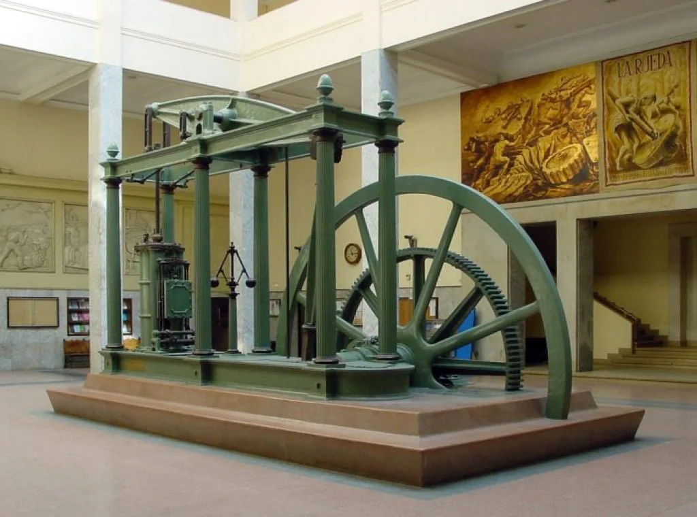
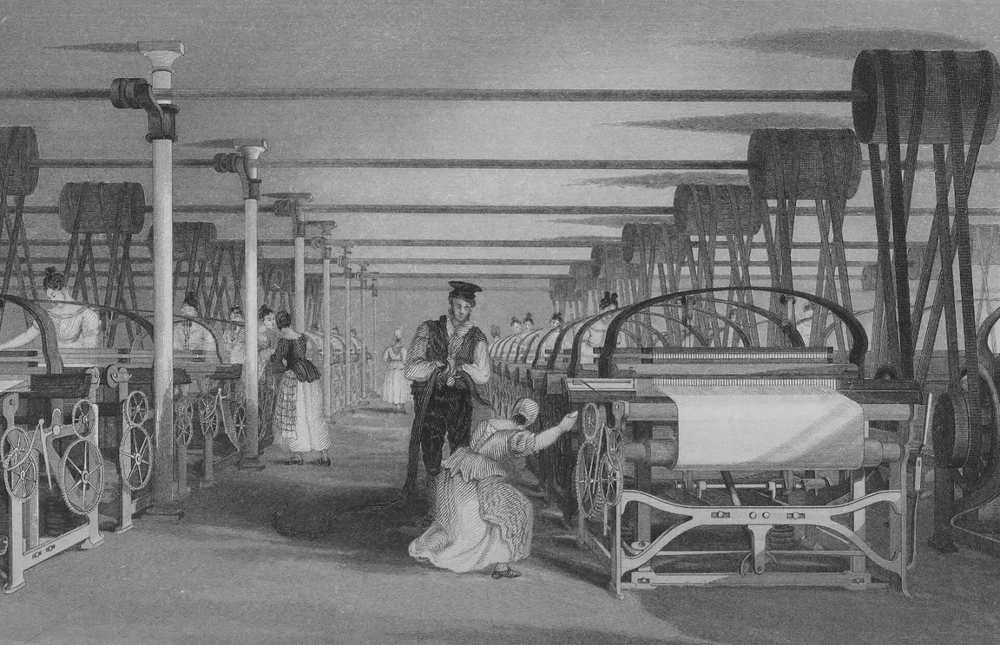
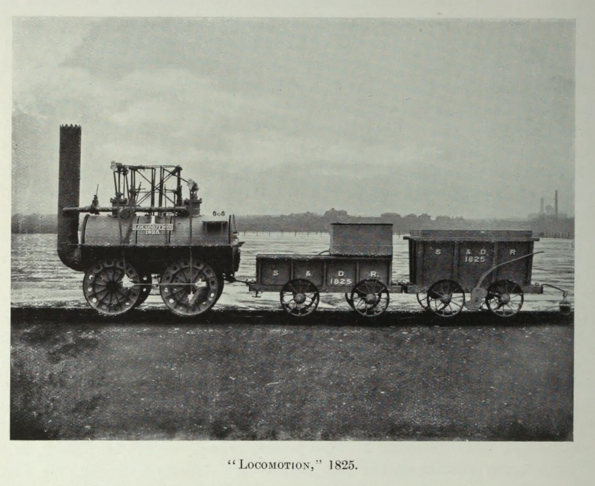
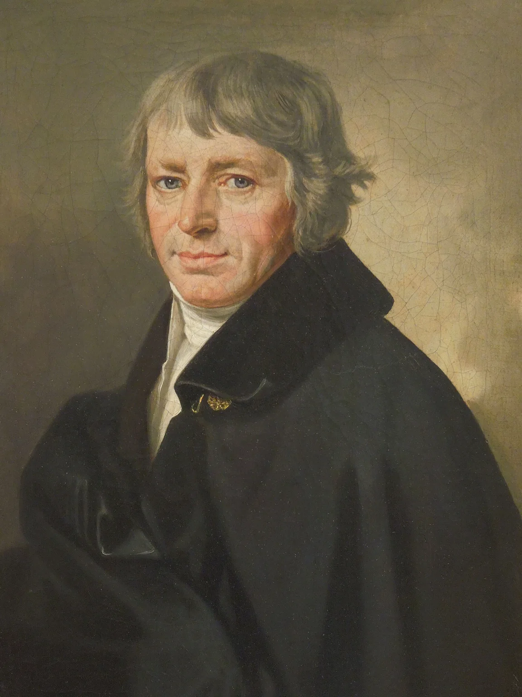
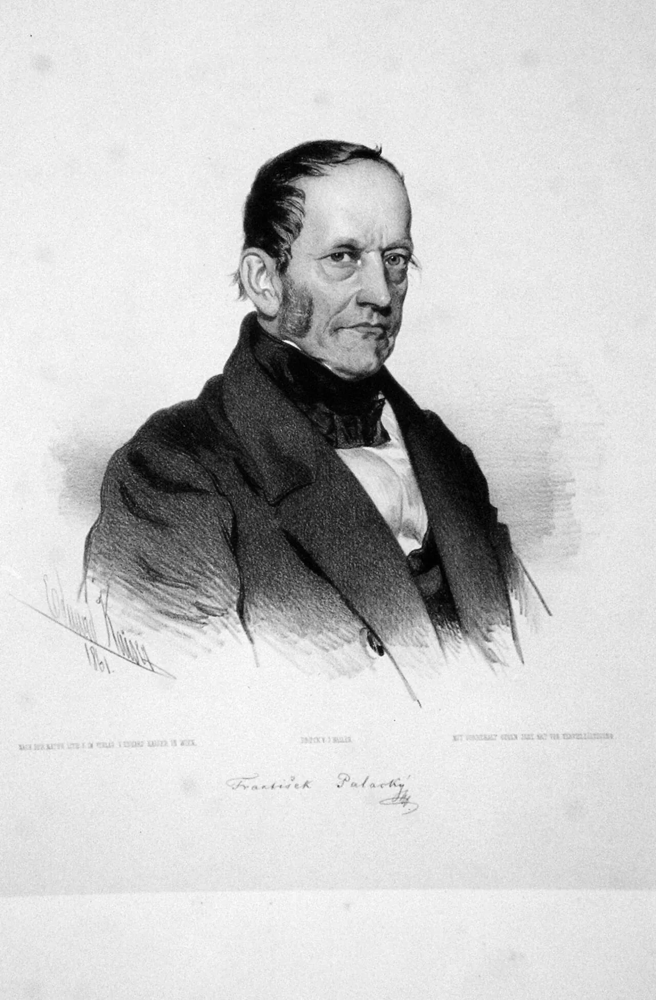
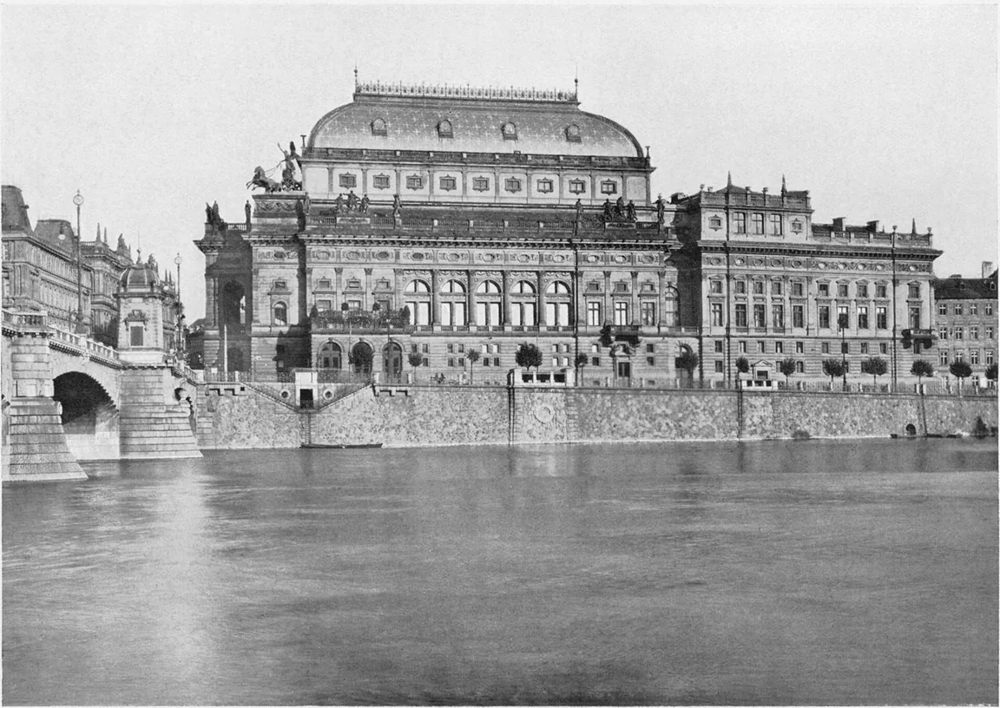

Nová společnost
Vznikli tovární dělníci a podnikatelé. Města rychle rostla. Dělníci trpěli dlouhou pracovní dobou, dětskou prací a špatným bydlením, a proto zakládali odbory a stávkovali.
Pro 8. ročník: stroje, továrny, proměna společnosti a zrod moderního českého národa.
Průmyslová revoluce začala v 18. století v Anglii. Dřív se vyrábělo ručně v dílnách, teď začaly práci dělat stroje. Klíčový byl parní stroj, který zdokonalil James Watt (1769): poháněl stroje v továrnách, lodě i lokomotivy. George Stephenson prosadil železnici – roku 1825 vyjela v Anglii první veřejná parní železnice.
Vznikli tovární dělníci a podnikatelé. Města rychle rostla. Dělníci trpěli dlouhou pracovní dobou, dětskou prací a špatným bydlením, a proto zakládali odbory a stávkovali.
Nejdřív se rozvíjela textilní výroba, později hutnictví a strojírenství. Do Prahy přijel první parní vlak roku 1845.
Obnova češtiny a vědomí vlastních dějin: Dobrovský (mluvnice), Jungmann (slovník), Palacký (Dějiny národu českého), Mácha (Máj, 1836), Němcová (Babička, 1855).
Obojí spolu souvisí: s průmyslem rostla města, školy a noviny – a ty pomáhaly šířit češtinu mezi lidmi. V revolučním roce 1848 byla zrušena robota. Roku 1868 byl položen základní kámen Národního divadla, postaveného ze sbírek lidí po celé zemi.
Typická chyba: koněspřežka z Českých Budějovic do Lince nebyla parní železnice – vagony táhli koně.
Seřaď od nejstarší: do Prahy přijel první parní vlak, James Watt patentoval zdokonalený parní stroj, koněspřežka zahájila provoz po celé trati, v Anglii vyjela první veřejná parní železnice.
✅ Wattův stroj (1769) → železnice v Anglii (1825) → koněspřežka (1832) → parní vlak v Praze (1845)
Dobové obrazy, fotografie a portréty. Všímej si, jak stroje změnily práci a kdo stál u zrodu moderního českého národa.






Průmyslová revoluce začala v Anglii v 18. století. Klíčový byl parní stroj, který pohnal továrny, lodě i železnici. V českých zemích probíhalo současně národní obrození – obnova českého jazyka, literatury a vědomí vlastních dějin. Na koněspřežce z Českých Budějovic do Lince se na prvním úseku jezdilo od roku 1827, po celé trati od roku 1832.